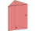

Read and use mathematical models in a technical document
This section covers the following mathematical concepts.
Identify shapes and apply their properties (skill)
This section presents geometric properties, illustrates identifying shapes in applications, and illustrates breaking down complex shapes into simple ones.
Subsection4.2.1Formulae
This section defines the two properties of interest and provides the formulae for some common shapes. Memorizing all of the formulae is not likely useful: in a job you will be able to look them up. However, anything you use a lot (e.g., prisms and spheres) is worth memorizing.
Use this section to learn to identify which measurement is used in each part of a formula and how to determine those from diagrams or descriptions of shapes. The next section will illustrate using these properties in applications.
The surface area of a 3D shape is the cummulative area of all the 2D areas of the shape. You can think of it as the amount of paint needed to cover the object. The volume of a 3D shape is a measure of what it takes to fill a 3D shape. In the figure below showing a paper cone for holding popcorn, the surface area is the amount of wax needed to coat the inside of the cone so the popcorn (butter) does not soak through the paper. The volume is how much popcorn can be held.
Figure4.2.1.Complex Shape with Surface and Volume
Rounding.
How we round on geometric problems will depend as always on the application. For example a carpenter will round to units that can be measured with a tape measure like 1/16 of an inch. Contextless examples in this section will be rounded using significant digits. When using significant digits treat all numbers in the formulae as exact numbers.
Definition4.2.2.Prism.
A prism is a solid consisting of two identical polygons connected by parallelograms.
These look like a polygon has been extruded. If the sides are rectangles, then it is called a right prism. Prisms are named for their base shape. For example, there are triangular prisms and pentagonal prisms. The figure below shows multiple prisms. Those on the left are right prisms (the angles on the bottom are right angles) and those on the right are skewed (some angle other than a right angle). The top two are triangular prisms and the bottom two are trapezoidal prisms.

Figure4.2.3.Various Prisms
Table4.2.4.Prisms
Shape
Surface Area
Volume
sum of area of all sides
\(V = B h\)
For surface area the sides are always parallelograms (rectangles for right prisms). For the volume \(B\) is the area of the base (the triangle or trapezoid in the four examples). \(h\) is the height or distance from the bottom to the top (or front to back if we tip the prism over). Note this is not along an edge, but perpendicular to the base.
Example4.2.5.
(a)
What is the surface area of the right triangular prism in Figure4.2.6?
The surface area consists of the areas of the two right triangles and the three rectangles. Because the triangles are right triangles, they both have area \(\frac{1}{2} \cdot 2.12\underline{5} \cdot 3.12\underline{5} = 3.3\underline{2}03125\text{.}\) The rectangle areas are \(2.12\underline{5} \cdot 10.25\underline{0} = 21.7\underline{8}125\) and \(3.12\underline{5} \cdot 10.25\underline{0} = 32.0\underline{3}125\text{.}\) For the third rectangle we need to calculate the side length. Because this is a right triangle we can use the Pythagorean theorem.
The third rectangle has area \(3.779\underline{0}5 \cdot 10.25\underline{0} \approx 38.73\underline{5}2625\text{.}\) The total area is \(2(3.3\underline{2}03125)+21.7\underline{8}125+32.0\underline{3}125+38.73\underline{5}2625 \approx 99.1\underline{8}83875 \approx 99.19\text{.}\)
(b)
What is the volume of the triangular prism in Figure4.2.6.(a)?
The volume is the area of the triangle, 3.320, times the height of the prism, 10.250. Thus the area is \(3.320 \cdot 10.250 = 34.03\text{.}\)
(c)
What is the volume of the triangular prism in Figure4.2.6.(b)?
The volume is the area of the triangle, 3.320, times the height of the prism, 10.250. Thus the area is \(3.320 \cdot 10.250 = 34.03\text{.}\) Notice that the volume is not affected by the tilt of the prism. This is not true of the surface area which we do not have sufficient information to calculate here.
(a)Right Triangular Prism
(b)Non-Right Triangular Prism
Figure4.2.6.Calculate the surface area and volume
Definition4.2.7.Cylinder.
A cylinder is a circular prism.
Table4.2.8.Cylinder
Shape
Lateral Surface Area
Volume
\(A=2\pi r \cdot s\)
\(V = \pi r^2 h\)
If the cylinder is not slanted then \(s=h\text{.}\) Notice the volume is not dependent on the angle of slant but the lateral surface area is. To obtain the complete surface area add the area of the top and bottom circles.
The formula for the area of the side of a cylinder looks like width (\(2\pi r\)) times height (\(s\)) which is the formula for area of a rectangle. Indeed if you think about a can (the type that contain paint, soup, or other substances) the label if peeled off is a rectangle. The height of that rectangle is the height of the can and the width of that rectangle is enough to wrap around the can.
Example4.2.9.
What are the total surface area and volume of this slanted cylinder?
We must approximate \(\pi\) precise to at least as many positions as the rest of the numbers. Otherwise we will decrease the overall precision. We do not need to use more positions: the extra disappears in the rounding at the end. Here we use the portion most commonly memorized or listed in a table.
What are the surface area and volume of this spherical dome? The dome is sitting on the ground so the only surface area of importance is the top surface.
Because this is a dome (half sphere) we divide the formula by 2.
This pyramid consists of four, identical triangular sides and a square base. Note the side lengths are given as exact numbers.
The area of one of the triangles can be found using Herons formula.
\begin{align*}
s & = \frac{1}{2}(2.0000+3.1623+3.1623)\\
& = 4.1623. \text{ All numbers precise to 4 decimal places}. \\
A & = \sqrt{s(s-3.1623)(s-3.1623)(s-2.0000)}\\
\end{align*}
Subtraction maintains 4 decimal places
\begin{align*}
& = \sqrt{(4.1623)(1.0000)(1.0000)(2.1623)} \text{ Product will have 5 sigfigs}\\
& = \sqrt{9.000\underline{1}4129} \text{ Root will maintain 5 sigfigs}\\
& = 3.000\underline{0}23548\\
& = 3.0000.
\end{align*}
The area of the base is \(2.0000 \cdot 2.0000 = 4.0000\text{.}\) Thus the surface area is \(4.0000+4(3.0000)=16.0000\text{.}\)
(b)
What is the volume of this pyramid?
The volume is \(V=\frac{1}{3}(2.0000^2)(2.8284) = 3.7712\text{.}\)
Example4.2.14.
Calculate the volume of this rectangular pyramid.
To calculate the volume we need the height which is not labeled. This is probably because we cannot put a measuring tape along the height (interior). However, we can calculate the height based on the right triangle with the height as one leg, the segment on the bottom (center of base to corner drawn below) and the edge length of the pyramid (labeled).
We do not have the length of the segment on the base (center to corner). We do know that the highest point of this pyramid is above the middle of the base. Thus this segment goes from the middle (both directions) to the corner. The length we need can be caluclated using the Pythagorean theorem. Because the point is in the middle the lengths are half of the measurements labeled.
\begin{align*}
h & = \sqrt{84.\underline{9}1715}. & & \text{ Root maintains 3 sigfigs}\\
h & \approx 9.2\underline{1}505019\\
h & \approx 9.22.
\end{align*}
Finally we can calculate the volume. The base has area \(5.31 \cdot 3.17 = 16.\underline{8}327 \approx 16.8\text{.}\) This pyramid has volume
\begin{equation*}
V = \frac{1}{3}(16.\underline{8}327)(9.2\underline{1}505019) \approx 51.\underline{7}0472510 \approx 51.7\text{.}
\end{equation*}
Checkpoint4.2.15.
Checkpoint4.2.16.
What is the relationship between the volume of a pyramid to the volume of a prism with the same base? same base means the same shape and size. The pyramid could then be placed inside the prism.
Table4.2.17.Cone
Shape
Lateral Surface Area
Volume
\(A=\pi r \sqrt{h^2+r^2}\) or \(A=\pi r s\)
\(V = \frac{\pi}{3} r^2 h \)
The surface area formulas apply only when it is a right circular cone (tip of the cone directly above the center of the circle). The volume formula works for all cones. For the full surface area we add the area of the circle at the bottom of the cone.
Example4.2.18.
Calculate the total surface area and the volume of this cone.
The surface area can be calculated directly. The lateral surface area is
The total area therefore is \(A = 326.4\underline{2}17471+103.2\underline{6}27509 \approx 429.6\underline{8}44980 \approx 429.68\text{.}\)
To calculate the volume we need to first calculate the height. Looking at the image we see that the labeled radius and side length are part of a right triangle with the height. This means
The frustrums are compound shapes: they are obtained by subtracting one shape from itself. The latin word frustrum means cut off. This is the etymology of frustrated which refers to a cut off hope. For these formulae the bases must be parallel. Note \(P_i\) below refers to the perimeter of the bases.
Table4.2.19.Frustrum of a Pyramid
Shape
Lateral Surface Area
Volume
\(\frac{1}{2}s(P_1+P_2)\)
\(V = \frac{1}{3} h (B_1+B_2+\sqrt{B_1 B_2}) \)
\(P_1\) is the perimeter of the lower base (bottom polygon). It will be the sum of the lengths of each side. \(P_2\) is calculated similarly. \(B_1\) is the area of the lower base (bottom polygon). It will be calculated based on the type of polygon (e.g., area of a triangle, parallelogram, etc.). \(B_2\) is the area of the upper base.
Example4.2.20.
(a)
What is the surface area of the frustrum of the pyramid in Figure4.2.21?
The perimeter of the lower base (triangle) is \(3(3.500)=10.500\) (3 is an exact number here so precision is not changed). The perimeter of the upper base (triangle) is \(3(2.200)=6.600\text{.}\) To calculate the area of the two bases we will need Herons formula.
Thus the surface area of the entire shape is \(60.0\underline{1}24987+23.7\underline{1}106071+3(6.90\underline{2}7) \approx 104.4\underline{3}16594 \approx 104.43\text{.}\)
(b)
What is the volume of the frustrum of a pyramid in Figure4.2.21?
We need the height (labeled) and the area of the two bases which were calculated in the previous step. Using these values
Figure4.2.21.Calculate Area and Volume of this Frustrum
Table4.2.22.Frustrum of a Cone
Shape
Lateral Surface Area
Volume
\(\pi s(r_1+r_2)\)
\(V = \frac{1}{3} h (B_1+B_2+\sqrt{B_1 B_2}) \)
The total surface area adds the area of the two discs (bottom and top) to the lateral surface area. The volume is the same formula as for a frustrum of a pyramid because these are pyramids built on a circle.
Example4.2.23.
What is the surface area an volume of one part of a muffin tin? The surface area would be the area of a paper liner (assuming it is flat and not corrugated) and the volume is the amount of batter that can be held (if fully filled).
The surface area will be the lateral surface area plus the area of the bottom base (muffin tin is open on top).
If we have the slant height (length of the side of a frustrum of a cone) we can calculate the height. This is similar to the calculation of height in Example4.2.14.
Example4.2.24.
Suppose the larger radius is 7.32, the smaller radius is 5.44, and the slant height is 6.09. The slant height is the hypotenuse of a right triangle with the height being one other side. The third side is on the larger base and has length \(7.32-5.44=1.88\text{.}\) We can use the Pythagorean theorem to calculate the height.
For the surface area of a frustrum of a cone we use the slant height: the distance from the edge of the bottom base to the edge of the top base. Here we consider limitations on that length.
For these questions suppose the bottom base has radius 5. The top base will vary depending on the slant height.
(a)
If the height is 3, can the slant height be 2?
(b)
What is the bottom of the range of possible slant heights for this frustrum?
(c)
If the height is 3 and the top base has radius 1, what is the slant height?
(d)
If the height is 3 and the top base has radius 0.5, what is the slant height?
(e)
What is the top of the range of possible slant heights for this frustrum? Note this is for bottom base radius 5, height 3, and top base radius unrestricted (but smaller than bottom base).
Subsection4.2.2Applying Geometry
Effectively using knowledge of geometric properties requires recognizing the shapes we know in problems we encounter and figuring out missing parameters from the parameters we do know. The latter we did in Example4.2.14 and Example4.2.24. We will extend our ability to calculate missing parameters in Chapter7. In the following problems we identify shapes and apply the appropriate formulae.
Example4.2.26.
What is the total, external area of this birdhouse? All measurments are in inches and accurate to 1/8 inch.
First, we identify the shapes. The front and back are triangles. The front triangle has a circular hole in it. The bottom and two sides are rectangles. Although this is a 3D object surface area uses 2D formulae.
For the triangles, we have edge lengths and not the height, because it is easier to measure the edges than the middle. For the area we will use Herons formula.
We round up because this is the safer estimate (better to have a little more than not enough for construction).
Example4.2.27.
An ice cream cone has the dimensions shown below.
(a)
What is the volume of the ice cream? No person can scoop with sufficient accuracy for a fraction of a square or cubic inch, so we will round to units.
Solution.
First, we identify the shapes. This is a right circular cone with a half sphere on top. The diameter of the cone and sphere is \(2 \; \frac{3}{8} = 2.375\) inches. The radius then is half of that or \(1 \; \frac{3}{16} = 1.1875\text{.}\) We convert to decimal inches, because in the end we would want to convert cubic inches (volume) to cups or pints or similar volume measures. This is easier with decimal inches.
The surface area of the half sphere is \(\frac{1}{2} \cdot 4 \pi (1.1875)^2 \approx 8.860265547\text{.}\) Thus the total surface area of the ice cream is \(22.81801626+8.860265547 \approx 31.67828181 \approx 32\) square inches.
Example4.2.28.
A part is produced by drilling a whole into a cylinder as shown below. If the weight of aluminum is \(2.70 \text{g}/\text{cm}^3\) what is the total weight of this part? These are precision measurements; round using significant digits.
First, we calculate the volume of the cylinder. It has a radius of \(1.20/2=0.60 \text{ cm}\text{.}\) The volume is
Next, we need to calculate the volume of the hole that is drilled out. That radius is given in mm, so we should convert to cm first. 4.76 mm is 0.476 cm, because there are 10 millimeters per centimeter. It has a radius of \(0.476/2=0.238 \text{ cm}\text{.}\) The volume is